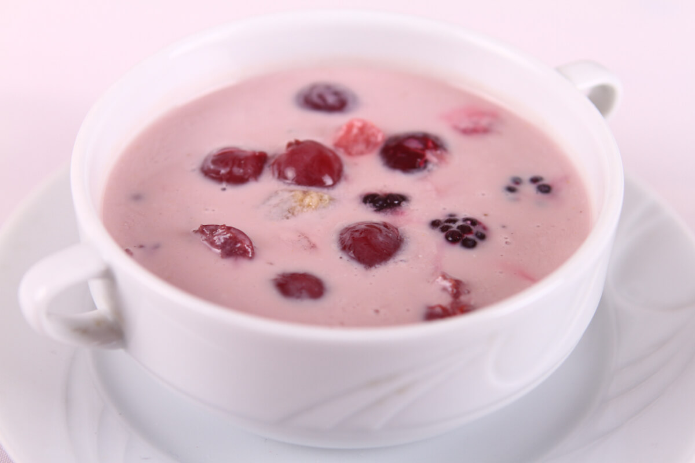

Gyümölcsleves
Ha szeretnétek a gyerekeknek még több gyümölcsöt adni szinte észrevétlenül, akkor ez egy jó választás.
Persze a felnőttek is nyugodt szívvel fogyaszthatják.
| Elkészítési idő | Főzés | Összesen |
|---|---|---|
| 5 perc | 35 perc | ~40 perc |

Hozzávalók
- 25 dkg meggy
- 1 tk fahéj
- 3 db szegfűszeg
- cukor (ízlés szerint)
- 40 dkg fagyasztott erdei gyümölcs mix
- 2 dl főzőtejszín
Elkészítés
- A hideg erdei gyümölcsleves elkészítéséhez a magozott meggyet egy nagy edénybe tesszük, majd kiegészítjük annyi vízzel, hogy egy liter legyen.
- Beletesszük a fűszereket, majd ízlés szerint teszünk bele cukrot, és 10 perc alatt összefőzzük, majd hozzáadjuk az erdei gyümölcsöket. 2 perc forralás után beleöntjük a főzőtejszínt, és addig keverjük, még besűrűsödik.
- A lábast hideg vízbe állítjuk, és amikor már langyos, fogyasztásig a hűtőbe tesszük.